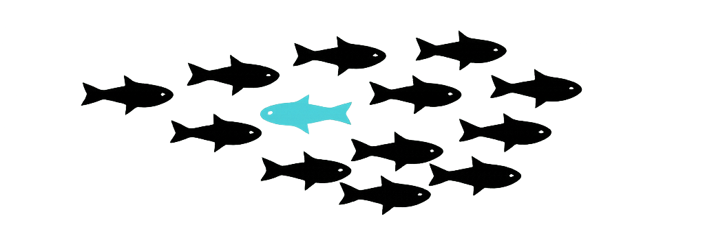

Seja muito bem-vindo,
Meu nome é Raquel Neres, sou estudante de sistema de informação. Interessada pela criação da "vida" por meio da programação, estudo no Ifes Serra, onde me dediquei como pesquisadora durante um ano no campo de Machile Learning.
Conhecimentos
Projeto
Chokmah é a palavra hebraica para "sabedoria" (חכמה), representando a segunda sephirah na Árvore da Vida da Cabala, situada no topo do pilar da força/masculino. É o intelecto celestial primordial, o ponto inicial de sabedoria divina que emana da vontade de Deus antes de ser moldado pela compreensão (Binah).
01000100 01100101 01110101 01110011 00100000 01110011 01110000 01100101 01110011 00100000 01101110 01101111 01110011 01110100 01110010 01100001